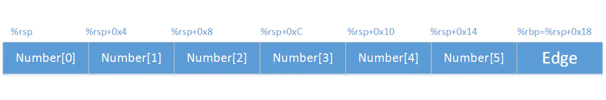
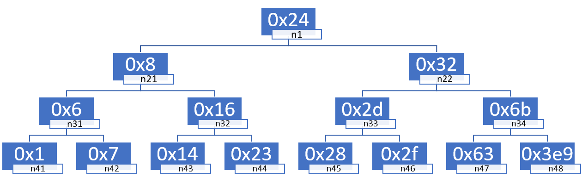

by TomatoEater
2021年10月
0）如何读取文件。./bomb <file> 注意文件中的换行符必须为LF，不能是CRLF，否则会爆炸。不要问我怎么知道
1）先把可执行文件反编译成汇编文件
1objdump -d bomb > bomb.s #反编译2）在bomb.c中找到这串代码
xxxxxxxxxx61 /* Hmm... Six phases must be more secure than one phase! */2 input = read_line(); /* Get input */3 phase_1(input); /* Run the phase */4 phase_defused(); /* Drat! They figured it out!5 * Let me know how they did it. */6 printf("Phase 1 defused. How about the next one?\n");发现六个phase是解决问题的关键
进入gdb调试：
xxxxxxxxxx11gdb bomb下面开始正式拆弹！
找到main函数中phase_1上下文：
xxxxxxxxxx41 400e32: e8 67 06 00 00 callq 40149e <read_line>2 400e37: 48 89 c7 mov %rax,%rdi3 400e3a: e8 a1 00 00 00 callq 400ee0 <phase_1>4 400e3f: e8 80 07 00 00 callq 4015c4 <phase_defused>%rax作为默认的函数返回寄存器，再根据read_line的函数名字，猜测%rdi会存刚刚输入的字符串，不妨利用gdb进行测试：
xxxxxxxxxx51(gdb) b *0x400e3a #设置breakpoint2(gdb) run3#随便输入啥，比如hello4(gdb) x /s $rdi #查看$rdi寄存器上的字符串，会返回hello5#$rdi里面是一个地址，通过这个地址可以找到这个字符串验证了猜想。而如果去看read_line函数汇编代码，会劝退的。。。
xxxxxxxxxx910000000000400ee0 <phase_1>:2 400ee0: 48 83 ec 08 sub $0x8,%rsp # 似乎不用栈也要如此3 400ee4: be 00 24 40 00 mov $0x402400,%esi # 有猫腻！4 400ee9: e8 4a 04 00 00 callq 401338 <strings_not_equal>5 400eee: 85 c0 test %eax,%eax6 400ef0: 74 05 je 400ef7 <phase_1+0x17> # 条件跳转跳过explode_bomb7 400ef2: e8 43 05 00 00 callq 40143a <explode_bomb>8 400ef7: 48 83 c4 08 add $0x8,%rsp9 400efb: c3 retq 把0x402400赋到%esi中，再去调用strings_not_equal，再加上之前%rdi存了我们输入的字符串！容易联想到就是比较%esi和%rdi地址的字符串是否相等。而且%rdi默认是第一参数，%rsi是第二参数！于是再去瞄一眼strings_not_equal！
x1000000000040131b <string_length>:2 40131b: 80 3f 00 cmpb $0x0,(%rdi)3...4 401337: c3 retq 5
60000000000401338 <strings_not_equal>:7 401338: 41 54 push %r128 40133a: 55 push %rbp9 40133b: 53 push %rbx10 40133c: 48 89 fb mov %rdi,%rbx11 40133f: 48 89 f5 mov %rsi,%rbp12 401342: e8 d4 ff ff ff callq 40131b <string_length>13 ...14 4013a1: c3 retq 整个代码又臭又长，看不懂。。。但是显然就是在比较%rdi和%rsi了！而且可以看出当相同时返回0；不相同返回1（额，这可能要看一会儿）。
xxxxxxxxxx21 400eee: 85 c0 test %eax,%eax2 400ef0: 74 05 je 400ef7 <phase_1+0x17>test %eax,%eax是将%eax与%eax做与运算，不改变%eax但是设置条件寄存器。当且仅当%eax值为0时，ZF寄存器会是1。
je通过ZF寄存器是否为1进行条件跳转。如果%eax为0的话，就会跳转，跳过 <explode_bomb>函数，也就是要让strings_not_equal（%rdi，%rsi）两个字符串相等即可。
xxxxxxxxxx21(gdb) x /s 0x402400 #输出0x402400地址存的字符串20x402400: "Border relations with Canada have never been better."Border relations with Canada have never been better.即为第一题答案。
xxxxxxxxxx2610000000000400efc <phase_2>:2 400efc: 55 push %rbp3 400efd: 53 push %rbx4 400efe: 48 83 ec 28 sub $0x28,%rsp5 400f02: 48 89 e6 mov %rsp,%rsi6 400f05: e8 52 05 00 00 callq 40145c <read_six_numbers>7 400f0a: 83 3c 24 01 cmpl $0x1,(%rsp) #%rsp地址上的值减去18 400f0e: 74 20 je 400f30 <phase_2+0x34> # 相等时跳9 400f10: e8 25 05 00 00 callq 40143a <explode_bomb>10 400f15: eb 19 jmp 400f30 <phase_2+0x34>11 400f17: 8b 43 fc mov -0x4(%rbx),%eax12 400f1a: 01 c0 add %eax,%eax13 400f1c: 39 03 cmp %eax,(%rbx)14 400f1e: 74 05 je 400f25 <phase_2+0x29>15 400f20: e8 15 05 00 00 callq 40143a <explode_bomb>16 400f25: 48 83 c3 04 add $0x4,%rbx17 400f29: 48 39 eb cmp %rbp,%rbx18 400f2c: 75 e9 jne 400f17 <phase_2+0x1b>19 400f2e: eb 0c jmp 400f3c <phase_2+0x40>20 400f30: 48 8d 5c 24 04 lea 0x4(%rsp),%rbx # lea加载有效地址，%rbx=%rsp地址加上4字节21 400f35: 48 8d 6c 24 18 lea 0x18(%rsp),%rbp22 400f3a: eb db jmp 400f17 <phase_2+0x1b>23 400f3c: 48 83 c4 28 add $0x28,%rsp24 400f40: 5b pop %rbx25 400f41: 5d pop %rbp26 400f42: c3 retq 当去研究<read_six_numbers>的汇编的时候又开始看不懂了。。。不过可以猜测就是读进去了六个数字。内存分布如下：

这里是一个运行时栈存数组的简单应用。
做完phase_3，弄清楚sscanf函数后，再来看read_six_numbers函数，终于有所眉目。
xxxxxxxxxx181000000000040145c <read_six_numbers>:2 40145c: 48 83 ec 18 sub $0x18,%rsp3 401460: 48 89 f2 mov %rsi,%rdx4 401463: 48 8d 4e 04 lea 0x4(%rsi),%rcx5 401467: 48 8d 46 14 lea 0x14(%rsi),%rax6 40146b: 48 89 44 24 08 mov %rax,0x8(%rsp)7 401470: 48 8d 46 10 lea 0x10(%rsi),%rax8 401474: 48 89 04 24 mov %rax,(%rsp)9 401478: 4c 8d 4e 0c lea 0xc(%rsi),%r910 40147c: 4c 8d 46 08 lea 0x8(%rsi),%r811 401480: be c3 25 40 00 mov $0x4025c3,%esi12 401485: b8 00 00 00 00 mov $0x0,%eax13 40148a: e8 61 f7 ff ff callq 400bf0 <__isoc99_sscanf@plt>14 40148f: 83 f8 05 cmp $0x5,%eax15 401492: 7f 05 jg 401499 <read_six_numbers+0x3d>16 401494: e8 a1 ff ff ff callq 40143a <explode_bomb>17 401499: 48 83 c4 18 add $0x18,%rsp18 40149d: c3 retq 这里就是一个利用运行时栈local variables & argument build area的应用。sscanf此时要有八个参数，类似sscanf(*str, "%d %d %d %d", &a, &b, &c, &d)。但是x86寄存器只有rdi、rsi、rdx、rcx、r8、r9可以做为函数参数，还有两个参数就需要利用栈来储存。可以看到：
xxxxxxxxxx41 401467: 48 8d 46 14 lea 0x14(%rsi),%rax2 40146b: 48 89 44 24 08 mov %rax,0x8(%rsp)3 401470: 48 8d 46 10 lea 0x10(%rsi),%rax4 401474: 48 89 04 24 mov %rax,(%rsp)将phase_2栈帧中的两个地址存到了read_six_numbers栈帧之中。而sscanf在子函数中0x8(%rsp)、(%rsp)这两个地址的写入，其实就是在父函数phase_2的0x14+%rsi与0x10+%rsi两个地址进行写入。这就是read_six_numbers栈帧中argument build area的应用。
至于local variables区域体现在phase_2栈帧存了数组这一点上。
总感觉local variables & argument build area两个东西区分不清，有点杂合。2.4就算姑且谈谈而已。
xxxxxxxxxx71(gdb) b *0x400f0a #在read_six_numbers后面打断点2(gdb) run3#phase_2输入1 2 3 4 5 64(gdb) x /24xb $rsp #24个，x十六进制，b一字节，xb顺序任意50x7fffffffe0d0: 0x01 0x00 0x00 0x00 0x02 0x00 0x00 0x00 #返回值60x7fffffffe0d8: 0x03 0x00 0x00 0x00 0x04 0x00 0x00 0x0070x7fffffffe0e0: 0x05 0x00 0x00 0x00 0x06 0x00 0x00 0x00印证了之前的猜想，注意到这里是小端表示法。这里的rsp存的地址也很有栈的味道（0x7ffffff开头）。
通过阅读phase_2的汇编代码，容易看出答案是1 2 4 8 16 32（这应该不难，就是一个do while循环）。
xxxxxxxxxx3810000000000400f43 <phase_3>:2 400f43: 48 83 ec 18 sub $0x18,%rsp3 400f47: 48 8d 4c 24 0c lea 0xc(%rsp),%rcx4 400f4c: 48 8d 54 24 08 lea 0x8(%rsp),%rdx5 400f51: be cf 25 40 00 mov $0x4025cf,%esi6 400f56: b8 00 00 00 00 mov $0x0,%eax7 400f5b: e8 90 fc ff ff callq 400bf0 <__isoc99_sscanf@plt> # 以上部分分析见代码后8 400f60: 83 f8 01 cmp $0x1,%eax # sscanf返回值和1比大小9 400f63: 7f 05 jg 400f6a <phase_3+0x27> # 如果大的话，就跳过爆炸10 400f65: e8 d0 04 00 00 callq 40143a <explode_bomb>11 400f6a: 83 7c 24 08 07 cmpl $0x7,0x8(%rsp) # 0x8(%rsp)地址上的值和7比大小12 400f6f: 77 3c ja 400fad <phase_3+0x6a> # 如果大的话，就跳到爆炸13 -----------------------↑sscanf；↓switch--------------------------------------------------14 400f71: 8b 44 24 08 mov 0x8(%rsp),%eax15 400f75: ff 24 c5 70 24 40 00 jmpq *0x402470(,%rax,8)16 400f7c: b8 cf 00 00 00 mov $0xcf,%eax17 400f81: eb 3b jmp 400fbe <phase_3+0x7b>18 400f83: b8 c3 02 00 00 mov $0x2c3,%eax19 400f88: eb 34 jmp 400fbe <phase_3+0x7b>20 400f8a: b8 00 01 00 00 mov $0x100,%eax21 400f8f: eb 2d jmp 400fbe <phase_3+0x7b>22 400f91: b8 85 01 00 00 mov $0x185,%eax23 400f96: eb 26 jmp 400fbe <phase_3+0x7b>24 400f98: b8 ce 00 00 00 mov $0xce,%eax25 400f9d: eb 1f jmp 400fbe <phase_3+0x7b>26 400f9f: b8 aa 02 00 00 mov $0x2aa,%eax27 400fa4: eb 18 jmp 400fbe <phase_3+0x7b>28 400fa6: b8 47 01 00 00 mov $0x147,%eax29 400fab: eb 11 jmp 400fbe <phase_3+0x7b>30 400fad: e8 88 04 00 00 callq 40143a <explode_bomb>31 400fb2: b8 00 00 00 00 mov $0x0,%eax32 400fb7: eb 05 jmp 400fbe <phase_3+0x7b>33 400fb9: b8 37 01 00 00 mov $0x137,%eax34 400fbe: 3b 44 24 0c cmp 0xc(%rsp),%eax35 400fc2: 74 05 je 400fc9 <phase_3+0x86>36 400fc4: e8 71 04 00 00 callq 40143a <explode_bomb>37 400fc9: 48 83 c4 18 add $0x18,%rsp38 400fcd: c3 retq 这里调用了sscanf函数，函数原型为int sscanf(const char *str, const char *format, ...)，譬如sscanf("hello 1", "%s %d", str, a)返回2且str=“hello”，a=1。根据x86汇编关于寄存器的约定，这里是sccanf(%rdi, %rsi, %rdx, %rcx)。%rdi是main函数的read_line输入，%rsi是格式化参数，%rdx和%rcx分别是两个存放输入的局部变量地址。由lea 0xc(%rsp),%rcx以及lea 0x8(%rsp),%rdx知道局部变量的地址。利用gdb进行验证，有：
xxxxxxxxxx51#$esi存放格式化参数2(gdb) b *0x400f563...4(gdb) x /s $esi50x4025cf: "%d %d"xxxxxxxxxx51#查看0x8(%rsp)和0xc(%rsp)，之前输入1 22(gdb) x /dw $rsp + 8 #d十进制，w四字节，wd亦可30x7fffffffe0f8: 14(gdb) x /dw $rsp + 0xc50x7fffffffe0f8: 2xxxxxxxxxx51#查看sscanf调用后的寄存器(只列出部分)2(gdb) i register3rcx 0x0 04rdx 0x7fffffffe0fc 1407374883473885rsi 0x0 0有意思的是sscanf把传进去的寄存器值修改过了。rcx不再是0xc(%rsp)，rci也不再是0x4025cf
显然后半部分代码是一个switch的实现，可以看出只要输入的a、b两个数满足——b是case a中的值，就可以成功拆弹。
jmpq *0x402470(,%rax,8)是一个跳转表的实现，*意味着是间接跳转到该地址，这里就是下一条指令跳转到0x402470+8*%rax这个内存地址上存的地址。再强调一下jmp指令。jmp有直接跳转和间接跳转、无条件跳转和条件跳转之说，其中条件跳转必为直接跳转。直接跳转如jmp .L2就是下一条指令从.L2:处开始；间接跳转，如jmp *%rax跳转到寄存器%rax所存的值（该值是一个地址），再如jmp *(%rax)跳转到内存地址(%rax)上所存的值（自然该值也是个地址）。
通过gdb查看0x402470附近的值
xxxxxxxxxx91(gdb) x /64xb 0x40247020x402470: 0x7c 0x0f 0x40 0x00 0x00 0x00 0x00 0x0030x402478: 0xb9 0x0f 0x40 0x00 0x00 0x00 0x00 0x0040x402480: 0x83 0x0f 0x40 0x00 0x00 0x00 0x00 0x0050x402488: 0x8a 0x0f 0x40 0x00 0x00 0x00 0x00 0x0060x402490: 0x91 0x0f 0x40 0x00 0x00 0x00 0x00 0x0070x402498: 0x98 0x0f 0x40 0x00 0x00 0x00 0x00 0x0080x4024a0: 0x9f 0x0f 0x40 0x00 0x00 0x00 0x00 0x0090x4024a8: 0xa6 0x0f 0x40 0x00 0x00 0x00 0x00 0x00至此所有拆弹前期工作做完。
如果第一个数输入1，在跳转表中找到0x402478: 0xb9 0x0f 0x40也就是跳转到0x400fb9，也就是400fb9: b8 37 01 00 00 mov $0x137,%eax。得到一组答案：1 311。完成拆弹！
当然也可以第一个输入1后利用(gdb) ni单步调试，发现下一条指令跳转到0x400fb9，也可以完成拆弹。第一次我是这么做的，但是当时显然对间接跳转理解不深。
话不多说，先上phase_4代码
xxxxxxxxxx251000000000040100c <phase_4>:2 40100c: 48 83 ec 18 sub $0x18,%rsp3 401010: 48 8d 4c 24 0c lea 0xc(%rsp),%rcx4 401015: 48 8d 54 24 08 lea 0x8(%rsp),%rdx5 40101a: be cf 25 40 00 mov $0x4025cf,%esi6 40101f: b8 00 00 00 00 mov $0x0,%eax7 401024: e8 c7 fb ff ff callq 400bf0 <__isoc99_sscanf@plt>8 401029: 83 f8 02 cmp $0x2,%eax # 读入的整数个数一定要等于29 40102c: 75 07 jne 401035 <phase_4+0x29> # 否则跳转到炸弹10 40102e: 83 7c 24 08 0e cmpl $0xe,0x8(%rsp) # 读入的第一个整数一定要小于等于1411 401033: 76 05 jbe 40103a <phase_4+0x2e> # 这要才能跳过炸弹12 401035: e8 00 04 00 00 callq 40143a <explode_bomb>13 ------------------------func4前---------------------------------------14 40103a: ba 0e 00 00 00 mov $0xe,%edx # 开始为func4做准备15 40103f: be 00 00 00 00 mov $0x0,%esi16 401044: 8b 7c 24 08 mov 0x8(%rsp),%edi17 401048: e8 81 ff ff ff callq 400fce <func4>18 ------------------------func4后---------------------------------------19 40104d: 85 c0 test %eax,%eax # 到底eax是否为020 40104f: 75 07 jne 401058 <phase_4+0x4c> # 才不会跳到炸弹？21 401051: 83 7c 24 0c 00 cmpl $0x0,0xc(%rsp) # 当年输入的第二个整数也有要求！22 401056: 74 05 je 40105d <phase_4+0x51> # 第二个整数为0，可以跳过炸弹23 401058: e8 dd 03 00 00 callq 40143a <explode_bomb>24 40105d: 48 83 c4 18 add $0x18,%rsp25 401061: c3 retq 这里的汇编代码已经很熟悉了。容易知道这里要输入两个整数，并且第一个整数要小于等于14。不多说了。
func4后有一个小点要搞清楚，到底返回什么eax值才不会跳到炸弹呢？jne是由~ZF条件寄存器判断跳转，这里要不跳转，所以~ZF为0，也就是ZF=1。当且仅当%eax等于零时，test %eax, %eax才设置ZF为1。所以这里要func4返回的eax值等于0！
此外，还可以分析出，之前输入的第二个整数一定为0。这里不做展开。
在进入func4之前，我们给%edi、%esi、%edx三个寄存器设置了初值，所以可以得到int func4(int a, int b, int c)这个函数原型。可能有疑问，之前的%rcx也有初值，为什么不作func4的参数。这是因为%rcx是sscanf的参数，在sscanf结束后，%rcx的值是没有意义的。（不过如果进入函数的时候pop进了栈，这样也可以保存寄存器欸）
func4启动！！！
xxxxxxxxxx2310000000000400fce <func4>:2 400fce: 48 83 ec 08 sub $0x8,%rsp3 400fd2: 89 d0 mov %edx,%eax4 400fd4: 29 f0 sub %esi,%eax5 400fd6: 89 c1 mov %eax,%ecx6 400fd8: c1 e9 1f shr $0x1f,%ecx # 逻辑右移7 400fdb: 01 c8 add %ecx,%eax8 400fdd: d1 f8 sar %eax # 算术右移9 400fdf: 8d 0c 30 lea (%rax,%rsi,1),%ecx10 400fe2: 39 f9 cmp %edi,%ecx11 400fe4: 7e 0c jle 400ff2 <func4+0x24>12 400fe6: 8d 51 ff lea -0x1(%rcx),%edx13 400fe9: e8 e0 ff ff ff callq 400fce <func4>14 400fee: 01 c0 add %eax,%eax15 400ff0: eb 15 jmp 401007 <func4+0x39>16 400ff2: b8 00 00 00 00 mov $0x0,%eax17 400ff7: 39 f9 cmp %edi,%ecx18 400ff9: 7d 0c jge 401007 <func4+0x39>19 400ffb: 8d 71 01 lea 0x1(%rcx),%esi20 400ffe: e8 cb ff ff ff callq 400fce <func4>21 401003: 8d 44 00 01 lea 0x1(%rax,%rax,1),%eax22 401007: 48 83 c4 08 add $0x8,%rsp23 40100b: c3 retq func4困难就困难在于它是一个递归函数（自己调用自己），在分析的过程中很容易超过脑子内存。。。于是需要把它化成C程序来进行分析。但是化成c程序的过程也很有挑战性！这里先强调一点：cmp a,b jle .L1是b≤a才跳转到L1！！！
直译版
xxxxxxxxxx301int func4(int edi, int esi, int edx)2{3 int eax = edx;4 eax -= esi;5 unsigned int ecx = eax;6 ecx >> 31; //逻辑右移7 eax += ecx;8 eax >> 1; //算术右移9 ecx = eax + esi;10 if (ecx <= edi)11 {12 eax = 0;13 if (ecx >= edi)14 return eax;15 else16 {17 esi = ecx + 1;18 eax = func4(edi, esi, edx);19 eax = 2 * eax + 1;20 return eax;21 }22 }23 else24 {25 edx = ecx - 1;26 eax = func4(edi, esi, edx);27 eax *= 2;28 return eax;29 }30}意译版
xxxxxxxxxx81int func4(int a, int b, int c)2{3 int sign = !!((c-b) >> 31); //取c-a的符号位，由a<=14保证这里其实就是04 int judge = (sign + c - b) / 2 + b; //这里就是(c-a)/2+b5 if (a == judge) return 0;6 else if (a > judge) return 2 * func4(a, judge+1, c) + 1;7 else return 2 * func4(a, b, judge-1);8}现在只要找到那些让func4(a, 0, 14)返回0的a值即可，且a小于等于14。直接打表：0: 0; 1: 0; 2: 4; 3: 0; 4: 2; 5: 2; 6: 6; 7: 0; 8: 1; 9: 1; 10: 5; 11: 1; 12: 3; 13: 3; 14: 7;发现0、1、3、7四个值符合规则。于是答案可以为0 0、1 0、3 0以及7 0。完成拆弹！
本拆弹最初是和wnhheu在上院完成，在多处分析出错的情况下，居然一遍拆弹成功。原来是马原课，却一起找了一个空教室，用教室的投影仪和黑板拆弹。我后面感觉分析不清的时候就放弃了，但是wnhheu还是坚持了下来并报出了正确的答案。很有意思，特此记录。
冷知识：phase_5是本人拆弹最快的一个
xxxxxxxxxx4710000000000401062 <phase_5>:2 401062: 53 push %rbx3 401063: 48 83 ec 20 sub $0x20,%rsp4 401067: 48 89 fb mov %rdi,%rbx5 ---------------------------↓金丝雀（canary）------------------------- 6 40106a: 64 48 8b 04 25 28 00 mov %fs:0x28,%rax7 401071: 00 00 8 401073: 48 89 44 24 18 mov %rax,0x18(%rsp)9 ---------------------------↑金丝雀（canary）-------------------------10 401078: 31 c0 xor %eax,%eax # eax置为011 40107a: e8 9c 02 00 00 callq 40131b <string_length>12 40107f: 83 f8 06 cmp $0x6,%eax # 一定要输入六个字符13 401082: 74 4e je 4010d2 <phase_5+0x70> # 就可以跳过炸弹14 401084: e8 b1 03 00 00 callq 40143a <explode_bomb>15 401089: eb 47 jmp 4010d2 <phase_5+0x70>16 ----------------------------↓关键代码部分---------------------------------17 40108b: 0f b6 0c 03 movzbl (%rbx,%rax,1),%ecx # rax：for循环中的i；把单个字符读到ecx18 40108f: 88 0c 24 mov %cl,(%rsp) # ecx的后八位放到%rsp地址的内存中19 401092: 48 8b 14 24 mov (%rsp),%rdx # 再把%rsp地址的内存中的值，放到rdx中20 401096: 83 e2 0f and $0xf,%edx # edx只有后四位了！其余位全置零21 401099: 0f b6 92 b0 24 40 00 movzbl 0x4024b0(%rdx),%edx # 有猫腻！！！22 4010a0: 88 54 04 10 mov %dl,0x10(%rsp,%rax,1) # edx后四位放到栈的局部变量区23 4010a4: 48 83 c0 01 add $0x1,%rax # i++24 4010a8: 48 83 f8 06 cmp $0x6,%rax # i<625 4010ac: 75 dd jne 40108b <phase_5+0x29> # i!=6就继续for loop26 4010ae: c6 44 24 16 00 movb $0x0,0x16(%rsp) # 给刚刚的字符串加上'\0'27 4010b3: be 5e 24 40 00 mov $0x40245e,%esi # 喝！<strings_not_equal>第二个参数28 4010b8: 48 8d 7c 24 10 lea 0x10(%rsp),%rdi # <strings_not_equal>第一个参数29 4010bd: e8 76 02 00 00 callq 401338 <strings_not_equal>30 4010c2: 85 c0 test %eax,%eax # 返回值为0，就是两个字符串相等31 4010c4: 74 13 je 4010d9 <phase_5+0x77> # 便可以跳过炸弹32 ----------------------------↑关键代码部分-----------------------------------33 4010c6: e8 6f 03 00 00 callq 40143a <explode_bomb>34 4010cb: 0f 1f 44 00 00 nopl 0x0(%rax,%rax,1) # no operation，具体干啥不清楚35 4010d0: eb 07 jmp 4010d9 <phase_5+0x77>36 4010d2: b8 00 00 00 00 mov $0x0,%eax37 4010d7: eb b2 jmp 40108b <phase_5+0x29>38 ---------------------------↓金丝雀（canary）------------------------- 39 4010d9: 48 8b 44 24 18 mov 0x18(%rsp),%rax40 4010de: 64 48 33 04 25 28 00 xor %fs:0x28,%rax41 4010e5: 00 00 42 4010e7: 74 05 je 4010ee <phase_5+0x8c>43 4010e9: e8 42 fa ff ff callq 400b30 <__stack_chk_fail@plt>44 ---------------------------↑金丝雀（canary）-----------------------------45 4010ee: 48 83 c4 20 add $0x20,%rsp46 4010f2: 5b pop %rbx47 4010f3: c3 retq 金丝雀是一种防止内存越界引用和缓冲区溢出的手段。具体为：在该函数栈帧中的局部变量区与栈状态（返回地址和寄存器保存区）之间存入一个随机的金丝雀值（Canary），然后在恢复寄存器状态和返回返回地址之前，会检测该值是否发生变化，如果发生变化，则程序异常终止。 在这个程序中：movq %fs:28, %rax把canary值赋到%rax中；再把%rax赋到栈帧上；一些指令后，把栈帧该处的值赋回%rax；最后xor %fs:40, %rax可以检测canary值是否被修改。
都做到phase_5了，具体就不展开了。就是要输入六个字符，否则要爆炸。
显然这里可以是一个for循环，把输入的字符串中的每一个字符通过0x4024b0(%rdx),%edx这个奇怪的操作变成另一个字符！另一个字符利用gdb查看：
xxxxxxxxxx21(gdb) x /s 0x40245e20x40245e: "flyers"可见映射出来的字符串为"flyers"。
而关键中的关键是0x4024b0(%rdx),%edx这个到底是什么映射？
分析代码我们可以看出，寄存器%rdx只有最初字符的后四位，其余为都为零。那么这个数再加上0x4024b0，就可以得到映射到的地址了。也就是说地址映射是这样一个函数：
查看0x4024b0到0x4024b0+0xf的内存有：
xxxxxxxxxx31(gdb) x /16xb 0x4024b020x4024b0 <array.3449>: 0x6d 0x61 0x64 0x75 0x69 0x65 0x72 0x7330x4024b8 <array.3449+8>: 0x6e 0x66 0x6f 0x74 0x76 0x62 0x79 0x6cflyers的ASCII码分别是：0x66 0x6c 0x79 0x65 0x72 0x73。对应着<array.3449>的第9、f、e、5、6、7位置（0-base）。于是只要找到最后四位是它们的字符即可！
顺带一提这个数组存了还存了之前看到过的So you think you can stop the bomb with ctrl-c, do you?。摊手.jpg
xxxxxxxxxx21(gdb) x /s 0x4024b020x4024b0 <array.3449>: "maduiersnfotvbylSo you think you can stop the bomb with ctrl-c, do you?"也就是找最后四位分别为9、f、e、5、6、7的字符即可，查查ASCII表就行了。正常的可以是：ionefg 不正常的可以是：)?>%&'
答案不唯一。
phase_6代码真是又臭又长
xxxxxxxxxx93100000000004010f4 <phase_6>:2 4010f4: 41 56 push %r143 4010f6: 41 55 push %r134 4010f8: 41 54 push %r125 4010fa: 55 push %rbp6 4010fb: 53 push %rbx7 4010fc: 48 83 ec 50 sub $0x50,%rsp8 401100: 49 89 e5 mov %rsp,%r139 401103: 48 89 e6 mov %rsp,%rsi10 401106: e8 51 03 00 00 callq 40145c <read_six_numbers> # 读入六个整数11 -------------------------↑part1--part2↓------------------------------12 40110b: 49 89 e6 mov %rsp,%r1413 40110e: 41 bc 00 00 00 00 mov $0x0,%r12d # int i = 014 401114: 4c 89 ed mov %r13,%rbp # r13是第i个整数的地址（0-base）15 401117: 41 8b 45 00 mov 0x0(%r13),%eax # %eax是第i个整数（0-base）16 40111b: 83 e8 01 sub $0x1,%eax # %eax存的整数减一后17 40111e: 83 f8 05 cmp $0x5,%eax # 与5作比较18 401121: 76 05 jbe 401128 <phase_6+0x34> # 如果小于等于5，就跳过炸弹19 401123: e8 12 03 00 00 callq 40143a <explode_bomb>20 401128: 41 83 c4 01 add $0x1,%r12d # i++21 40112c: 41 83 fc 06 cmp $0x6,%r12d # i==6吗22 401130: 74 21 je 401153 <phase_6+0x5f> # 等于就跳出part2，进入part323 401132: 44 89 e3 mov %r12d,%ebx # int j = i （注意这里i已经加过1了）24 401135: 48 63 c3 movslq %ebx,%rax25 401138: 8b 04 84 mov (%rsp,%rax,4),%eax # 把第j个整数存入%eax（0-base）26 40113b: 39 45 00 cmp %eax,0x0(%rbp) # 第j个整数和第i-1个整数比较（0-base）27 40113e: 75 05 jne 401145 <phase_6+0x51> # 不相等，就跳过炸弹28 401140: e8 f5 02 00 00 callq 40143a <explode_bomb>29 401145: 83 c3 01 add $0x1,%ebx # j++30 401148: 83 fb 05 cmp $0x5,%ebx # j<=5吗31 40114b: 7e e8 jle 401135 <phase_6+0x41> # j<=5就继续j循环32 40114d: 49 83 c5 04 add $0x4,%r13 # r13更新为第i+1个整数的地址（0-base）33 401151: eb c1 jmp 401114 <phase_6+0x20> # 继续i循环34 -------------------------↑part2--part3↓------------------------------35 401153: 48 8d 74 24 18 lea 0x18(%rsp),%rsi # 循环终止条件0x18(%rsp)36 401158: 4c 89 f0 mov %r14,%rax # i，遍历数组用37 40115b: b9 07 00 00 00 mov $0x7,%ecx # 接下四步完成七减去这个数38 401160: 89 ca mov %ecx,%edx39 401162: 2b 10 sub (%rax),%edx40 401164: 89 10 mov %edx,(%rax)41 401166: 48 83 c0 04 add $0x4,%rax # i+=0x442 40116a: 48 39 f0 cmp %rsi,%rax # i!=0x18(%rsp)43 40116d: 75 f1 jne 401160 <phase_6+0x6c>44 -------------------------↑part3--part4↓------------------------------45 40116f: be 00 00 00 00 mov $0x0,%esi # i，遍历数组用，为方便认为i范围0~546 401174: eb 21 jmp 401197 <phase_6+0xa3>47 401176: 48 8b 52 08 mov 0x8(%rdx),%rdx # 相当于链表中p=p->next48 40117a: 83 c0 01 add $0x1,%eax # j++49 40117d: 39 c8 cmp %ecx,%eax # j与第i个数比较50 40117f: 75 f5 jne 401176 <phase_6+0x82> # 不等继续p=p->next51 401181: eb 05 jmp 401188 <phase_6+0x94> # 相等就可以存起来52 401183: ba d0 32 60 00 mov $0x6032d0,%edx # 有猫腻！edx存第一个节点地址53 401188: 48 89 54 74 20 mov %rdx,0x20(%rsp,%rsi,2) # 在栈帧相关位置存nodej地址54 40118d: 48 83 c6 04 add $0x4,%rsi # i++55 401191: 48 83 fe 18 cmp $0x18,%rsi # i与6比较56 401195: 74 14 je 4011ab <phase_6+0xb7> # 如果i==6，进入part557 401197: 8b 0c 34 mov (%rsp,%rsi,1),%ecx # %ecx存了第i个数58 40119a: 83 f9 01 cmp $0x1,%ecx # 该数与一比较59 40119d: 7e e4 jle 401183 <phase_6+0x8f> # 小于等于1，跳转60 40119f: b8 01 00 00 00 mov $0x1,%eax # j，遍历节点用，j范围1~661 4011a4: ba d0 32 60 00 mov $0x6032d0,%edx # 有猫腻！edx存第一个节点地址62 4011a9: eb cb jmp 401176 <phase_6+0x82>63 -------------------------↑part4--part5↓------------------------------64 4011ab: 48 8b 5c 24 20 mov 0x20(%rsp),%rbx # %rbx存<nodeA>地址65 4011b0: 48 8d 44 24 28 lea 0x28(%rsp),%rax # 存了<nodeB>地址的地址66 4011b5: 48 8d 74 24 50 lea 0x50(%rsp),%rsi # 循环终止条件67 4011ba: 48 89 d9 mov %rbx,%rcx # %rcx初始化为<nodeA>地址68 4011bd: 48 8b 10 mov (%rax),%rdx # %rdx是%rcx下一节点的地址69 4011c0: 48 89 51 08 mov %rdx,0x8(%rcx) # 将%rcx的next指针指向%rdx70 4011c4: 48 83 c0 08 add $0x8,%rax71 4011c8: 48 39 f0 cmp %rsi,%rax # 判断循环终止72 4011cb: 74 05 je 4011d2 <phase_6+0xde>73 4011cd: 48 89 d1 mov %rdx,%rcx74 4011d0: eb eb jmp 4011bd <phase_6+0xc9>75 4011d2: 48 c7 42 08 00 00 00 movq $0x0,0x8(%rdx)76 4011d9: 00 77 -------------------------↑part5--part6↓------------------------------78 4011da: bd 05 00 00 00 mov $0x5,%ebp79 4011df: 48 8b 43 08 mov 0x8(%rbx),%rax # %rbx还存着<nodeA>地址80 4011e3: 8b 00 mov (%rax),%eax # eax存<nodeB>地址上的值81 4011e5: 39 03 cmp %eax,(%rbx) # <nodeA>地址的值与<nodeB>地址上的值做比较82 4011e7: 7d 05 jge 4011ee <phase_6+0xfa> # 如果<nodeA>的大，就跳过炸弹83 4011e9: e8 4c 02 00 00 callq 40143a <explode_bomb>84 4011ee: 48 8b 5b 08 mov 0x8(%rbx),%rbx 85 4011f2: 83 ed 01 sub $0x1,%ebp86 4011f5: 75 e8 jne 4011df <phase_6+0xeb>87 4011f7: 48 83 c4 50 add $0x50,%rsp88 4011fb: 5b pop %rbx89 4011fc: 5d pop %rbp90 4011fd: 41 5c pop %r1291 4011ff: 41 5d pop %r1392 401201: 41 5e pop %r1493 401203: c3 retq 可以把phase_6的代码分成六个部分，我们逐一解读。其实phase_6也并不是很难，只不过需要十足的耐心。
part1部分再在2.4已经详细讲过了，就是读入六个整数，并将其放在%rsp、%rsp+0x4、...、%rsp+0x20这六个位置。也就是在栈里面存了数组。不做展开。
稍有点麻烦。这里就是个嵌套循环，具体解释可以看注释。翻译出来的C代码如下：
xxxxxxxxxx111int a[6];2for (int i = 0; i != 6; i++)3{4 if (a[i] > 6)5 explode_bomb();6 for (int j = i+1; j <= 5; j++)7 {8 if (a[i] == a[j])9 explode_bomb();10 }11}可见输入的六个整数首先要满足两两不同且都小于等于6。于是可以不触发炸弹，进入part3了。
part3不难，就是数组的六个数分别变成7减去它自己。也就是假设原来数是a，现在变成7-a。比较简单，不做展开。
part4算是phase_6的难点了。这里就先放结论了：假设现在的数组是[A, B, C, D, E, F]（均为1~6整数），那么在栈帧的%rsp+0x20到%rsp+0x48地址分别存了<nodeA>、<nodeB>、...、<nodeF>的地址。利用gdb可以看到以下<node>数据：
xxxxxxxxxx121(gdb) x /96xb 0x6032d020x6032d0 <node1>: 0x4c 0x01 0x00 0x00 0x01 0x00 0x00 0x0030x6032d8 <node1+8>: 0xe0 0x32 0x60 0x00 0x00 0x00 0x00 0x0040x6032e0 <node2>: 0xa8 0x00 0x00 0x00 0x02 0x00 0x00 0x0050x6032e8 <node2+8>: 0xf0 0x32 0x60 0x00 0x00 0x00 0x00 0x0060x6032f0 <node3>: 0x9c 0x03 0x00 0x00 0x03 0x00 0x00 0x0070x6032f8 <node3+8>: 0x00 0x33 0x60 0x00 0x00 0x00 0x00 0x0080x603300 <node4>: 0xb3 0x02 0x00 0x00 0x04 0x00 0x00 0x0090x603308 <node4+8>: 0x10 0x33 0x60 0x00 0x00 0x00 0x00 0x00100x603310 <node5>: 0xdd 0x01 0x00 0x00 0x05 0x00 0x00 0x00110x603318 <node6>: 0xbb 0x01 0x00 0x00 0x06 0x00 0x00 0x00120x603328 <node6+8>: 0x00 0x00 0x00 0x00 0x00 0x00 0x00 0x00下面做一定的解读：
这里是一个用数组存的链表，用C描述如下：
xxxxxxxxxx161struct node2{3 int value;4 int index;5 node *next;6};7void buildList()8{9 node list[6];10 for (int i = 0; i < 5; i++)11 {12 list[i].next = &list[i+1];13 list[i].index = i+1;14 list[i].value = 某个value;15 }16}可见该链表满足<node1>地址加0x8的地址上存<node2>的地址，<node2>地址加0x8的地址上存<node3>的地址，以此类推。
part4也有嵌套循环，外层循环利用%esi遍历数组，在%ecx中存了数组里具体的数。利用%eax来遍历节点，在%rdx存了节点的地址。通过比较%ecx和%eax，利用mov 0x8(%rdx),%rdx ，实现链表中p=p->next的操作。最后将%rdx值（也就是第%ecx个节点的地址）存到栈帧的指定区域。这里遍历节点是1-base的，所以可以得到之前输入的六个数除了满足小于等于6的条件外，还要大于等于1。
这里还行。就是在<nodeA>地址加0x8的地址上存<nodeB>的地址，在<nodeB>地址加0x8的地址上存<nodeC>的地址，以此类推。而原来节点是<node1>地址加0x8的地址上存<node2>的地址，<node2>地址加0x8的地址上存<node3>的地址，以此类推。这样刚刚虚假的链表，变得高级真实起来了。比如输入4 3 2 1 6 5，7减去它们变成3 4 5 6 1 2。利用gdb查看更新后的链表有：
xxxxxxxxxx131(gdb) x /96xb 0x6032d020x6032d0 <node1>: 0x4c 0x01 0x00 0x00 0x01 0x00 0x00 0x0030x6032d8 <node1+8>: 0xe0 0x32 0x60 0x00 0x00 0x00 0x00 0x0040x6032e0 <node2>: 0xa8 0x00 0x00 0x00 0x02 0x00 0x00 0x0050x6032e8 <node2+8>: 0x00 0x00 0x00 0x00 0x00 0x00 0x00 0x0060x6032f0 <node3>: 0x9c 0x03 0x00 0x00 0x03 0x00 0x00 0x0070x6032f8 <node3+8>: 0x00 0x33 0x60 0x00 0x00 0x00 0x00 0x0080x603300 <node4>: 0xb3 0x02 0x00 0x00 0x04 0x00 0x00 0x0090x603308 <node4+8>: 0x10 0x33 0x60 0x00 0x00 0x00 0x00 0x00100x603310 <node5>: 0xdd 0x01 0x00 0x00 0x05 0x00 0x00 0x00110x603318 <node5+8>: 0x20 0x33 0x60 0x00 0x00 0x00 0x00 0x00120x603320 <node6>: 0xbb 0x01 0x00 0x00 0x06 0x00 0x00 0x00130x603328 <node6+8>: 0xd0 0x32 0x60 0x00 0x00 0x00 0x00 0x00符合node3->node4->node5->node6->node1->node2->NULL
这里也不难了，就是要求<nodeA>地址上的值大于等于<nodeB>的，<nodeB>的大于<nodeC>的。注意这里的值都是32位的int，所以只取低32位。按照从大到小排列，依次是0x39c、0x2b3、0x1dd、0x1bb、0x14c、0xa8。对应节点依次为3、4、5、6、1、2。由于最初用7减去输入的数，所以答案是4 3 2 1 6 5。本题答案只有一个。
至此，六个炸弹全部被拆除。
然而Bomb Lab还安排了一个secret_phase要拆。。。其实给足了暗示：
xxxxxxxxxx21/* Wow, they got it! But isn't something... missing? Perhaps2 * something they overlooked? Mua ha ha ha ha! */既然有，那就拆！
在<phase_defused>找到<secret_phase>的调用：
xxxxxxxxxx43100000000004015c4 <phase_defused>:2 4015c4: 48 83 ec 78 sub $0x78,%rsp3 4015c8: 64 48 8b 04 25 28 00 mov %fs:0x28,%rax4 4015cf: 00 00 5 4015d1: 48 89 44 24 68 mov %rax,0x68(%rsp)6 4015d6: 31 c0 xor %eax,%eax7 4015d8: 83 3d 81 21 20 00 06 cmpl $0x6,0x202181(%rip) # 603760 <num_input_strings>8 4015df: 75 5e jne 40163f <phase_defused+0x7b> # 不是phase_6就直接return9 4015e1: 4c 8d 44 24 10 lea 0x10(%rsp),%r810 4015e6: 48 8d 4c 24 0c lea 0xc(%rsp),%rcx11 4015eb: 48 8d 54 24 08 lea 0x8(%rsp),%rdx12 4015f0: be 19 26 40 00 mov $0x402619,%esi13 4015f5: bf 70 38 60 00 mov $0x603870,%edi # 读入字符串是何方神圣？14 4015fa: e8 f1 f5 ff ff callq 400bf0 <__isoc99_sscanf@plt>15 4015ff: 83 f8 03 cmp $0x3,%eax # 如果没有读到第三个参数，就return16 401602: 75 31 jne 401635 <phase_defused+0x71>17 401604: be 22 26 40 00 mov $0x402622,%esi # 正确的参数！18 401609: 48 8d 7c 24 10 lea 0x10(%rsp),%rdi19 40160e: e8 25 fd ff ff callq 401338 <strings_not_equal>20 401613: 85 c0 test %eax,%eax21 401615: 75 1e jne 401635 <phase_defused+0x71> # 如果第三个参数错误，也return22 401617: bf f8 24 40 00 mov $0x4024f8,%edi23 40161c: e8 ef f4 ff ff callq 400b10 <puts@plt>24 401621: bf 20 25 40 00 mov $0x402520,%edi25 401626: e8 e5 f4 ff ff callq 400b10 <puts@plt>26 40162b: b8 00 00 00 00 mov $0x0,%eax27 401630: e8 0d fc ff ff callq 401242 <secret_phase>28 401635: bf 58 25 40 00 mov $0x402558,%edi29 40163a: e8 d1 f4 ff ff callq 400b10 <puts@plt>30 40163f: 48 8b 44 24 68 mov 0x68(%rsp),%rax31 401644: 64 48 33 04 25 28 00 xor %fs:0x28,%rax32 40164b: 00 00 33 40164d: 74 05 je 401654 <phase_defused+0x90>34 40164f: e8 dc f4 ff ff callq 400b30 <__stack_chk_fail@plt>35 401654: 48 83 c4 78 add $0x78,%rsp36 401658: c3 retq 37 401659: 90 nop38 40165a: 90 nop39 40165b: 90 nop40 40165c: 90 nop41 40165d: 90 nop42 40165e: 90 nop43 40165f: 90 nop1）<num_input_strings>
在第七行我们看到cmpl $0x6,0x202181(%rip) # 603760 <num_input_strings>，很nice的给了注释。在运行时查看0x603760有：
xxxxxxxxxx61Breakpoint 1, 0x0000000000400efc in phase_2 ()2(gdb) x /xb 0x60376030x603760 <num_input_strings>: 0x024Breakpoint 2, 0x0000000000400f43 in phase_3 ()5(gdb) x /xb 0x60376060x603760 <num_input_strings>: 0x03可见num_input_strings就是一个当前在第几个phase的整数。只有当phase_6时，才有可能进入secret_phase，否则就直接跳转到return了。
2）sscanf
在第十四行程序调用了sscanf，老样子查看一下格式化参数：
xxxxxxxxxx21(gdb) x /s 0x40261920x402619: "%d %d %s"是两个整数，一个字符串。
但是这里不同于其他的phase，sscanf的第一个参数%rdi不再是由input = read_line();读入，而是由$0x603870,%edi直接传入。在运行时查看0x603870的内存有：
xxxxxxxxxx21(gdb) x /s 0x60387020x603870 <input_strings+240>: "0 0"可见该地址存的字符串就是当初phase_4传入的。
3）进入secret_phase
那phase_4还应该输入什么字符串才能触发secret_phase呢？利用gdb有：
xxxxxxxxxx21(gdb) x /s 0x40262220x402622: "DrEvil"可见phase_4输入0 0 DrEvil便可以进入secret_phase。
xxxxxxxxxx61linux> ./bomb input2Welcome to my fiendish little bomb. You have 6 phases with3...4#会在defuse phase_6后出现以下两行：5Curses, you've found the secret phase!6But finding it and solving it are quite different...xxxxxxxxxx3610000000000401242 <secret_phase>:2 401242: 53 push %rbx3 401243: e8 56 02 00 00 callq 40149e <read_line>4 401248: ba 0a 00 00 00 mov $0xa,%edx # strol第三个参数5 40124d: be 00 00 00 00 mov $0x0,%esi # strol第二个参数6 401252: 48 89 c7 mov %rax,%rdi # strol第一个参数7 401255: e8 76 f9 ff ff callq 400bd0 <strtol@plt> # 将读取的字符串转换为长整型8 40125a: 48 89 c3 mov %rax,%rbx # 返回值存到%rbx中9 40125d: 8d 40 ff lea -0x1(%rax),%eax # 整数减去1后要小于等于100010 401260: 3d e8 03 00 00 cmp $0x3e8,%eax # 也就是输入的整数要小于等于100111 401265: 76 05 jbe 40126c <secret_phase+0x2a>12 401267: e8 ce 01 00 00 callq 40143a <explode_bomb>13 40126c: 89 de mov %ebx,%esi #fun7第二个参数：输入的整数14 40126e: bf f0 30 60 00 mov $0x6030f0,%edi #fun7第一个参数15 401273: e8 8c ff ff ff callq 401204 <fun7>16 401278: 83 f8 02 cmp $0x2,%eax # 返回2，就可以跳过炸弹17 40127b: 74 05 je 401282 <secret_phase+0x40>18 40127d: e8 b8 01 00 00 callq 40143a <explode_bomb>19 401282: bf 38 24 40 00 mov $0x402438,%edi20 401287: e8 84 f8 ff ff callq 400b10 <puts@plt>21 40128c: e8 33 03 00 00 callq 4015c4 <phase_defused>22 401291: 5b pop %rbx23 401292: c3 retq 24 401293: 90 nop25 401294: 90 nop26 401295: 90 nop27 401296: 90 nop28 401297: 90 nop29 401298: 90 nop30 401299: 90 nop31 40129a: 90 nop32 40129b: 90 nop33 40129c: 90 nop34 40129d: 90 nop35 40129e: 90 nop36 40129f: 90 nop这段汇编不难，主要有两点
long int strtol(const char *str, char **endptr, int base)，从str中读字符串，以base为进制转换为长整型并返回，endptr指向str中无法转换为长整型的字符串首地址。这里endptr==NULL，base==10。xxxxxxxxxx2110000000000401204 <fun7>:2 401204: 48 83 ec 08 sub $0x8,%rsp3 401208: 48 85 ff test %rdi,%rdi #空节点返回-14 40120b: 74 2b je 401238 <fun7+0x34>5 40120d: 8b 17 mov (%rdi),%edx6 40120f: 39 f2 cmp %esi,%edx7 401211: 7e 0d jle 401220 <fun7+0x1c>8 401213: 48 8b 7f 08 mov 0x8(%rdi),%rdi #左儿子9 401217: e8 e8 ff ff ff callq 401204 <fun7>10 40121c: 01 c0 add %eax,%eax #2*eax11 40121e: eb 1d jmp 40123d <fun7+0x39>12 401220: b8 00 00 00 00 mov $0x0,%eax13 401225: 39 f2 cmp %esi,%edx14 401227: 74 14 je 40123d <fun7+0x39> #相等就return 015 401229: 48 8b 7f 10 mov 0x10(%rdi),%rdi #右儿子16 40122d: e8 d2 ff ff ff callq 401204 <fun7>17 401232: 8d 44 00 01 lea 0x1(%rax,%rax,1),%eax #2*eax+118 401236: eb 05 jmp 40123d <fun7+0x39>19 401238: b8 ff ff ff ff mov $0xffffffff,%eax20 40123d: 48 83 c4 08 add $0x8,%rsp21 401241: c3 retq 我们刚刚做完phase_6，这里又出现了mov 0x8(%rdi),%rdi和mov 0x10(%rdi),%rdi的代码了，可以联想到指针，直接用gdb查看内存有：
xxxxxxxxxx311(gdb) x /60xg 0x6030f020x6030f0 <n1>: 0x0000000000000024 0x000000000060311030x603100 <n1+16>: 0x0000000000603130 0x000000000000000040x603110 <n21>: 0x0000000000000008 0x000000000060319050x603120 <n21+16>: 0x0000000000603150 0x000000000000000060x603130 <n22>: 0x0000000000000032 0x000000000060317070x603140 <n22+16>: 0x00000000006031b0 0x000000000000000080x603150 <n32>: 0x0000000000000016 0x000000000060327090x603160 <n32+16>: 0x0000000000603230 0x0000000000000000100x603170 <n33>: 0x000000000000002d 0x00000000006031d0110x603180 <n33+16>: 0x0000000000603290 0x0000000000000000120x603190 <n31>: 0x0000000000000006 0x00000000006031f0130x6031a0 <n31+16>: 0x0000000000603250 0x0000000000000000140x6031b0 <n34>: 0x000000000000006b 0x0000000000603210150x6031c0 <n34+16>: 0x00000000006032b0 0x0000000000000000160x6031d0 <n45>: 0x0000000000000028 0x0000000000000000170x6031e0 <n45+16>: 0x0000000000000000 0x0000000000000000180x6031f0 <n41>: 0x0000000000000001 0x0000000000000000190x603200 <n41+16>: 0x0000000000000000 0x0000000000000000200x603210 <n47>: 0x0000000000000063 0x0000000000000000210x603220 <n47+16>: 0x0000000000000000 0x0000000000000000220x603230 <n44>: 0x0000000000000023 0x0000000000000000230x603240 <n44+16>: 0x0000000000000000 0x0000000000000000240x603250 <n42>: 0x0000000000000007 0x0000000000000000250x603260 <n42+16>: 0x0000000000000000 0x0000000000000000260x603270 <n43>: 0x0000000000000014 0x0000000000000000270x603280 <n43+16>: 0x0000000000000000 0x0000000000000000280x603290 <n46>: 0x000000000000002f 0x0000000000000000290x6032a0 <n46+16>: 0x0000000000000000 0x0000000000000000300x6032b0 <n48>: 0x00000000000003e9 0x0000000000000000310x6032c0 <n48+16>: 0x0000000000000000 0x000000000000000这里是一棵二叉搜索树，利用word画出如下word真香：

汇编翻译出来的c代码如下：
xxxxxxxxxx161struct node2{3 int value;4 node *lc;5 node *rc;6};7int search(node *root, int val)8{9 if (root == NULL)10 return -1;11 else if (root->value == val)12 return 0;13 else if (val < root->value)14 return 2 * search(root->lc, val);15 else return 2 * search(root->rc, val) + 1;16}现在要返回2，可以分析得到答案为0x14或者0x16，也就是20或者22。
最后我的input文件为：
xxxxxxxxxx81Border relations with Canada have never been better.21 2 4 8 16 3231 31140 0 DrEvil5)?>%&'64 3 2 1 6 57208
我的输出为：
xxxxxxxxxx121➜ bomb git:(master) ✗ ./bomb input2Welcome to my fiendish little bomb. You have 6 phases with3which to blow yourself up. Have a nice day!4Phase 1 defused. How about the next one?5That's number 2. Keep going!6Halfway there!7So you got that one. Try this one.8Good work! On to the next...9Curses, you've found the secret phase!10But finding it and solving it are quite different...11Wow! You've defused the secret stage!12Congratulations! You've defused the bomb!至此六个phase以及secret_phase都完成了！整个Bomb Lab完美结束！！！
本人于2021/10/16完成了Bomb Lab，从开始做正好一周左右。个人认为Bomb Lab是一个相当好的练习汇编阅读的实验。虽然并没有什么代码量，只是利用gdb来查看寄存器和内存罢了，但是Bomb Lab在趣味上和几个汇编的设计上都很花心思。从一开始简单的比较字符串到后面switch、链表以及二叉树的实现，循序渐进，相当不错！
个人主要强化了以下几点知识：
个人还有一些猜测：
node list[6]，而是由于堆栈的保护措施被关？预计接下来：